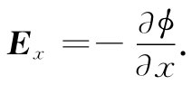
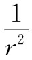

谁在乎ϕ呢？因为作用于电荷上的力都是由电场E提供的。关键在于，E可以容易地由ϕ求得——事实上，这如同取微商那样容易。试考虑两个点，一点在x处，另一点在（x+Δx）处，而这两点处于相同的y和z。试问把一单位电荷从一点移至另一点时做了多少功？该路径是沿x至x+Δx的一条水平线，所做之功等于这两点的电势之差：
而对相同路径抵抗电场力所做的功为
ΔW=-∫E·ds=-Ex Δx.
可见
 （4.26）
同理，Ey =-∂ϕ/∂y，Ez =-∂ϕ/∂z。或者，用矢量分析的符号把它们综合起来，则
E=-▽ϕ. （4.27）
这个方程是式（4.22）的微分形式。任何具有确定电荷的问题，都可以通过式（4.24）或（4.25）算出电势，再用式（4.27）求场加以解决。式（4.27）与我们从矢量微积分学所求得的式子相符，即对于任一标量场ϕ，
根据式（4.25），标量势ϕ由一个三维积分给出，它同我们以往对E的积分相似。算ϕ是否比算E有优点呢？有的！对于ϕ来说，只用到一个积分，而对于E则有三个积分——因为它是一个矢量。而且，对1/r的积分往往比对x/r3 的积分稍微方便。在许多实际情况中，先算出ϕ，然后取其梯度以求得电场，比计算E的三个积分较为容易。当然这仅仅是一个实际问题。
ϕ这个势还有更深刻的物理意义。我们已经证明，当ϕ由式（4.22）给出时，库仑力中的E可以由E=-▽ϕ获得。但如果E等于一个标量场的梯度，那么，我们从矢量运算知道E的旋度必定等于零：
▽×E=0. （4.29）
这恰好就是静电学中第二个基本方程，即式（4.6）。我们已经证明，由库仑定律会给出一个满足该条件的E场。到目前为止，事事都很顺利。
我们在定义电势之前，实际上已经证明▽×E=0。我们曾经指出，绕一闭合路径所做的功为零。这就是说，对于任何 路径，
∮E·ds=0.
在第3章中，我们曾见到对任何这类场，▽×E必定处处为零。静电学中的电场是无旋场的一个例子。
你可以用另一种方法——对于由式（4.11）所给出的点电荷的场，计算▽×E的分量——证明▽×E等于零，借以练习你们的矢量运算。如果你得到零，则叠加原理告诉说，对于任何电荷分布的场，其旋度你也会得到零。
应当指出一个重要事实：对于任何径向 力，做的功与路径无关，因而存在着势。如果你想到这一点，上面为证明功的积分与路径无关的全部论据，仅有赖于来自单个电荷的力是径向和球对称的这个事实。它并不取决于与距离的关系为 的事实——很可能存在与r的任何依赖关系。势的存在以及E的旋度等于零的事实，实际上只是由于静电力具有方向 及对称性 的缘故。基于此，式（4.28）或式（4.29）只可能包含了电学规律的一部分。